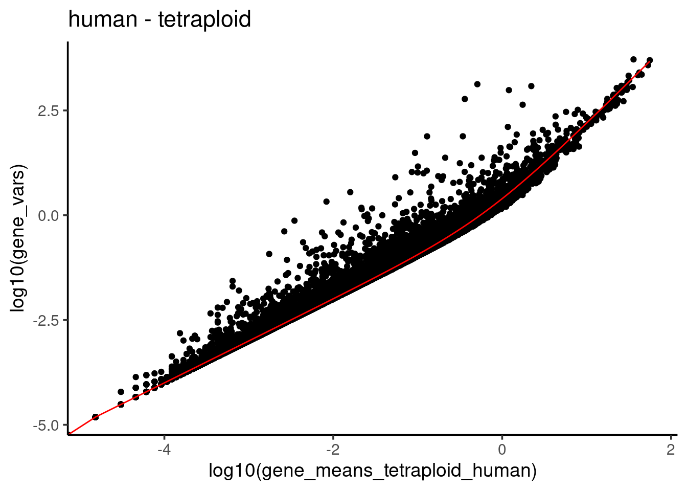

Last updated: 2024-06-26
Checks: 6 1
Knit directory: differentialDispersion/
This reproducible R Markdown analysis was created with workflowr (version 1.7.1). The Checks tab describes the reproducibility checks that were applied when the results were created. The Past versions tab lists the development history.
Great! Since the R Markdown file has been committed to the Git repository, you know the exact version of the code that produced these results.
Great job! The global environment was empty. Objects defined in the global environment can affect the analysis in your R Markdown file in unknown ways. For reproduciblity it’s best to always run the code in an empty environment.
The command set.seed(20240625) was run prior to running
the code in the R Markdown file. Setting a seed ensures that any results
that rely on randomness, e.g. subsampling or permutations, are
reproducible.
Great job! Recording the operating system, R version, and package versions is critical for reproducibility.
Nice! There were no cached chunks for this analysis, so you can be confident that you successfully produced the results during this run.
Using absolute paths to the files within your workflowr project makes it difficult for you and others to run your code on a different machine. Change the absolute path(s) below to the suggested relative path(s) to make your code more reproducible.
| absolute | relative |
|---|---|
| /project2/gilad/awchen55/differentialDispersion/data/human_ASE_subset.csv | data/human_ASE_subset.csv |
| /project2/gilad/awchen55/differentialDispersion/data/chimp_ASE_subset.csv | data/chimp_ASE_subset.csv |
Great! You are using Git for version control. Tracking code development and connecting the code version to the results is critical for reproducibility.
The results in this page were generated with repository version 8a5d48c. See the Past versions tab to see a history of the changes made to the R Markdown and HTML files.
Note that you need to be careful to ensure that all relevant files for
the analysis have been committed to Git prior to generating the results
(you can use wflow_publish or
wflow_git_commit). workflowr only checks the R Markdown
file, but you know if there are other scripts or data files that it
depends on. Below is the status of the Git repository when the results
were generated:
Ignored files:
Ignored: .Rhistory
Ignored: .Rproj.user/
Ignored: analysis/figure/
Untracked files:
Untracked: analysis/chimp_ASE_subset.csv
Untracked: analysis/human_ASE_subset.csv
Unstaged changes:
Modified: .Rprofile
Note that any generated files, e.g. HTML, png, CSS, etc., are not included in this status report because it is ok for generated content to have uncommitted changes.
These are the previous versions of the repository in which changes were
made to the R Markdown
(analysis/differential_dispersion_hybrid_line.Rmd) and HTML
(docs/differential_dispersion_hybrid_line.html) files. If
you’ve configured a remote Git repository (see
?wflow_git_remote), click on the hyperlinks in the table
below to view the files as they were in that past version.
| File | Version | Author | Date | Message |
|---|---|---|---|---|
| Rmd | 8a5d48c | awchen55 | 2024-06-26 | wflow_publish("analysis/differential_dispersion_hybrid_line.Rmd") |
Load the data.
require(Seurat)Loading required package: SeuratLoading required package: SeuratObjectLoading required package: sp
Attaching package: 'SeuratObject'The following objects are masked from 'package:base':
intersect, trequire(SeuratDisk)Loading required package: SeuratDiskRegistered S3 method overwritten by 'SeuratDisk':
method from
as.sparse.H5Group Seuratrequire(SeuratData)Loading required package: SeuratDataHC <- LoadH5Seurat("/project2/gilad/kenneth/HC/GSE201516_DataS4.h5Seurat")Validating h5Seurat fileInitializing RNA with dataAdding counts for RNAAdding miscellaneous information for RNAAdding reduction umapAdding cell embeddings for umapAdding miscellaneous information for umapAdding command informationAdding cell-level metadataAdding miscellaneous informationAdding tool-specific resultsLook at the dimensions of the data.
dim(HC)[1] 32741 311391sum(HC$alignment=="combined")/2[1] 65374Split the data by human vs chimp.
human.ASE <- subset(HC, subset = (alignment == "combined" & species == "human"))
chimp.ASE <- subset(HC, subset = (alignment == "combined" & species == "chimp"))Look at a snippet of the data.
dim(human.ASE)[1] 32741 65374dim(chimp.ASE)[1] 32741 65374human.ASE[['RNA']]$counts[1:5,1:5]5 x 5 sparse Matrix of class "dgCMatrix"
human_Rep1_Lane1_AAACCCAAGAAGATCT human_Rep1_Lane1_AAACCCAAGCGAGTAC
A1BG . .
A1CF . .
A2M . .
A2ML1 . .
A3GALT2 . .
human_Rep1_Lane1_AAACCCAAGCGTTGTT human_Rep1_Lane1_AAACCCAAGGGAGGCA
A1BG . .
A1CF . .
A2M . .
A2ML1 . .
A3GALT2 . .
human_Rep1_Lane1_AAACCCAAGGTACAAT
A1BG .
A1CF .
A2M .
A2ML1 .
A3GALT2 .chimp.ASE[['RNA']]$counts[1:5,1:5]5 x 5 sparse Matrix of class "dgCMatrix"
chimp_Rep1_Lane1_AAACCCAAGAAGATCT chimp_Rep1_Lane1_AAACCCAAGCGAGTAC
A1BG . .
A1CF . .
A2M . .
A2ML1 . .
A3GALT2 . .
chimp_Rep1_Lane1_AAACCCAAGCGTTGTT chimp_Rep1_Lane1_AAACCCAAGGGAGGCA
A1BG . .
A1CF . .
A2M . .
A2ML1 . .
A3GALT2 . .
chimp_Rep1_Lane1_AAACCCAAGGTACAAT
A1BG .
A1CF .
A2M .
A2ML1 .
A3GALT2 .Create a subset of data to work with.
# library(MASS)
# human_sub <- human.ASE[['RNA']]$counts[1:1000,1:1000]
# chimp_sub <- chimp.ASE[['RNA']]$counts[1:1000,1:1000]
# write.csv(human_sub, '/project2/gilad/awchen55/differentialDispersion/data/human_ASE_subset.csv')
# write.csv(chimp_sub, '/project2/gilad/awchen55/differentialDispersion/data/chimp_ASE_subset.csv')Check the mean variance relationship.
library(sparseMatrixStats)Loading required package: MatrixGenericsLoading required package: matrixStats
Attaching package: 'MatrixGenerics'The following objects are masked from 'package:matrixStats':
colAlls, colAnyNAs, colAnys, colAvgsPerRowSet, colCollapse,
colCounts, colCummaxs, colCummins, colCumprods, colCumsums,
colDiffs, colIQRDiffs, colIQRs, colLogSumExps, colMadDiffs,
colMads, colMaxs, colMeans2, colMedians, colMins, colOrderStats,
colProds, colQuantiles, colRanges, colRanks, colSdDiffs, colSds,
colSums2, colTabulates, colVarDiffs, colVars, colWeightedMads,
colWeightedMeans, colWeightedMedians, colWeightedSds,
colWeightedVars, rowAlls, rowAnyNAs, rowAnys, rowAvgsPerColSet,
rowCollapse, rowCounts, rowCummaxs, rowCummins, rowCumprods,
rowCumsums, rowDiffs, rowIQRDiffs, rowIQRs, rowLogSumExps,
rowMadDiffs, rowMads, rowMaxs, rowMeans2, rowMedians, rowMins,
rowOrderStats, rowProds, rowQuantiles, rowRanges, rowRanks,
rowSdDiffs, rowSds, rowSums2, rowTabulates, rowVarDiffs, rowVars,
rowWeightedMads, rowWeightedMeans, rowWeightedMedians,
rowWeightedSds, rowWeightedVarslibrary(tidyverse)── Attaching packages ─────────────────────────────────────── tidyverse 1.3.1 ──✔ ggplot2 3.3.6 ✔ purrr 0.3.4
✔ tibble 3.1.7 ✔ dplyr 1.0.9
✔ tidyr 1.2.0 ✔ stringr 1.4.0
✔ readr 2.1.2 ✔ forcats 0.5.1── Conflicts ────────────────────────────────────────── tidyverse_conflicts() ──
✖ dplyr::count() masks matrixStats::count()
✖ dplyr::filter() masks stats::filter()
✖ dplyr::lag() masks stats::lag()library(ggplot2)
gene_means_tetraploid_human <- sparseMatrixStats::rowMeans2(human.ASE[['RNA']]$counts)
gene_vars_tetraploid_human <- sparseMatrixStats::rowVars(human.ASE[['RNA']]$counts)
gene_means_tetraploid_chimp <- sparseMatrixStats::rowMeans2(chimp.ASE[['RNA']]$counts)
gene_vars_tetraploid_chimp <- sparseMatrixStats::rowVars(chimp.ASE[['RNA']]$counts)
df_human <- bind_cols(gene_means = gene_means_tetraploid_human, gene_vars = gene_vars_tetraploid_human)
df_chimp <- bind_cols(gene_means = gene_means_tetraploid_chimp, gene_vars = gene_vars_tetraploid_chimp)
df_human %>% ggplot(aes(x = log10(gene_means_tetraploid_human), y = log10(gene_vars_tetraploid_human))) +
geom_point() +
theme_classic(base_size = 14) +
ggtitle("Human - Tetraploid")df_chimp %>% ggplot(aes(x = log10(gene_means_tetraploid_chimp), y = log10(gene_vars_tetraploid_chimp))) +
geom_point() +
theme_classic(base_size = 14) +
ggtitle("Chimp - Tetraploid")Fitting across genes on negative binomial model
model<- lm(gene_vars_tetraploid_human ~ 1* gene_means_tetraploid_human + I(gene_means_tetraploid_human^2) + 0, data =df_human )
summary(model)
Call:
lm(formula = gene_vars_tetraploid_human ~ 1 * gene_means_tetraploid_human +
I(gene_means_tetraploid_human^2) + 0, data = df_human)
Residuals:
Min 1Q Median 3Q Max
-718.2 0.0 0.0 0.1 3300.5
Coefficients:
Estimate Std. Error t value Pr(>|t|)
I(gene_means_tetraploid_human^2) 1.483351 0.003611 410.8 <2e-16 ***
---
Signif. codes: 0 '***' 0.001 '**' 0.01 '*' 0.05 '.' 0.1 ' ' 1
Residual standard error: 24.19 on 32740 degrees of freedom
Multiple R-squared: 0.8375, Adjusted R-squared: 0.8375
F-statistic: 1.688e+05 on 1 and 32740 DF, p-value: < 2.2e-16Predicting with NB and estimated dispersion parameter
predicted_df<- data.frame(mean = df_human$gene_means, var_predict =
df_human$gene_means + summary(model)$coefficients[1] * (df_human$gene_means)^2 )
df_human %>% ggplot(aes(x = log10(gene_means_tetraploid_human), y = log10(gene_vars))) +
geom_point() +
geom_line(color = "red", data = predicted_df, aes(x = log10(gene_means_tetraploid_human), y =log10(var_predict))) +
theme_classic(base_size = 14) +
ggtitle("human - tetraploid")
Observed zeros vs theoretical zeros
phi <- 1/summary(model)$coefficients[1]
zeros_nb<- (phi/(gene_means_tetraploid_human + phi))^phi
zeros_observed<- apply(human.ASE[['RNA']]$counts, 1, function(x) mean(x ==0))Warning in asMethod(object): sparse->dense coercion: allocating vector of size
15.9 GiBdata.frame(zeros_nb = zeros_nb, zeros_observed = zeros_observed,
gene_means = gene_means_tetraploid_human) %>%
ggplot(aes(x =log10(gene_means_tetraploid_human), y = zeros_observed)) +
geom_point() +
geom_line(aes(x = log10(gene_means_tetraploid_human), y = zeros_nb), color = "red") +
theme_classic(base_size = 14) +
ggtitle("Observed vs theoretical")
sessionInfo()R version 4.2.0 (2022-04-22)
Platform: x86_64-pc-linux-gnu (64-bit)
Running under: CentOS Linux 7 (Core)
Matrix products: default
BLAS/LAPACK: /software/openblas-0.3.13-el7-x86_64/lib/libopenblas_haswellp-r0.3.13.so
locale:
[1] LC_CTYPE=en_US.UTF-8 LC_NUMERIC=C LC_TIME=C
[4] LC_COLLATE=C LC_MONETARY=C LC_MESSAGES=C
[7] LC_PAPER=C LC_NAME=C LC_ADDRESS=C
[10] LC_TELEPHONE=C LC_MEASUREMENT=C LC_IDENTIFICATION=C
attached base packages:
[1] stats graphics grDevices utils datasets methods base
other attached packages:
[1] forcats_0.5.1 stringr_1.4.0 dplyr_1.0.9
[4] purrr_0.3.4 readr_2.1.2 tidyr_1.2.0
[7] tibble_3.1.7 ggplot2_3.3.6 tidyverse_1.3.1
[10] sparseMatrixStats_1.8.0 MatrixGenerics_1.8.0 matrixStats_0.62.0
[13] SeuratData_0.2.2.9001 SeuratDisk_0.0.0.9021 Seurat_5.1.0
[16] SeuratObject_5.0.2 sp_1.6-0 workflowr_1.7.1
loaded via a namespace (and not attached):
[1] readxl_1.4.0 backports_1.4.1 spam_2.8-0
[4] plyr_1.8.7 igraph_2.0.3 lazyeval_0.2.2
[7] splines_4.2.0 RcppHNSW_0.4.1 listenv_0.8.0
[10] scattermore_1.2 digest_0.6.29 htmltools_0.5.2
[13] fansi_1.0.3 magrittr_2.0.3 tensor_1.5
[16] cluster_2.1.3 ROCR_1.0-11 tzdb_0.3.0
[19] globals_0.15.0 modelr_0.1.8 spatstat.sparse_3.0-0
[22] colorspace_2.0-3 rvest_1.0.2 rappdirs_0.3.3
[25] ggrepel_0.9.1 haven_2.5.0 xfun_0.30
[28] callr_3.7.3 crayon_1.5.1 jsonlite_1.8.0
[31] progressr_0.10.0 spatstat.data_3.0-0 survival_3.3-1
[34] zoo_1.8-10 glue_1.6.2 polyclip_1.10-0
[37] gtable_0.3.0 leiden_0.4.2 future.apply_1.9.0
[40] abind_1.4-5 scales_1.2.0 DBI_1.1.2
[43] spatstat.random_3.1-3 miniUI_0.1.1.1 Rcpp_1.0.12
[46] viridisLite_0.4.0 xtable_1.8-4 reticulate_1.24
[49] bit_4.0.4 dotCall64_1.0-1 htmlwidgets_1.5.4
[52] httr_1.4.3 RColorBrewer_1.1-3 ellipsis_0.3.2
[55] ica_1.0-2 farver_2.1.0 pkgconfig_2.0.3
[58] dbplyr_2.1.1 sass_0.4.1 uwot_0.1.14
[61] deldir_1.0-6 utf8_1.2.2 labeling_0.4.2
[64] tidyselect_1.1.2 rlang_1.0.2 reshape2_1.4.4
[67] later_1.3.0 cellranger_1.1.0 munsell_0.5.0
[70] tools_4.2.0 cli_3.3.0 generics_0.1.3
[73] broom_0.8.0 ggridges_0.5.3 evaluate_0.15
[76] fastmap_1.1.0 yaml_2.3.5 goftest_1.2-3
[79] processx_3.8.0 knitr_1.39 bit64_4.0.5
[82] fs_1.5.2 fitdistrplus_1.1-8 RANN_2.6.1
[85] pbapply_1.5-0 future_1.25.0 nlme_3.1-157
[88] whisker_0.4 mime_0.12 xml2_1.3.3
[91] hdf5r_1.3.8 compiler_4.2.0 rstudioapi_0.13
[94] plotly_4.10.0 png_0.1-7 spatstat.utils_3.0-1
[97] reprex_2.0.1 bslib_0.3.1 stringi_1.7.6
[100] highr_0.9 ps_1.7.0 RSpectra_0.16-1
[103] lattice_0.20-45 Matrix_1.7-0 vctrs_0.4.1
[106] pillar_1.7.0 lifecycle_1.0.1 spatstat.geom_3.0-6
[109] lmtest_0.9-40 jquerylib_0.1.4 RcppAnnoy_0.0.19
[112] data.table_1.14.2 cowplot_1.1.1 irlba_2.3.5
[115] httpuv_1.6.5 patchwork_1.1.1 R6_2.5.1
[118] promises_1.2.0.1 KernSmooth_2.23-20 gridExtra_2.3
[121] parallelly_1.31.1 codetools_0.2-18 fastDummies_1.7.3
[124] MASS_7.3-56 assertthat_0.2.1 rprojroot_2.0.3
[127] withr_2.5.0 sctransform_0.4.1 hms_1.1.1
[130] parallel_4.2.0 grid_4.2.0 rmarkdown_2.14
[133] Rtsne_0.16 git2r_0.30.1 getPass_0.2-2
[136] spatstat.explore_3.0-6 lubridate_1.8.0 shiny_1.7.1